Gemini 参考图谱
2026-10-16 · 14 张参考图与观察边界 · 离线阅读文档，不是网站原型
A6API 首页 · 时间状态 0
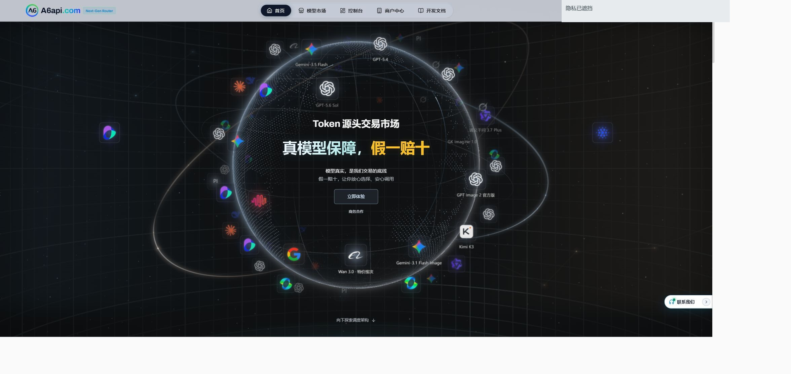
- 参考哪里
- 公告关闭后的首页：地球、轨道、网格及不同深度的浮动标记。
- 如何应用
- 借鉴空间层次；把模型标记替换为九项教学能力与样例入口。
- 不要误读
- 没有验证功能标记悬停后出现作品预览；这是用户新增期望。
A6API 首页 · 时间状态 1
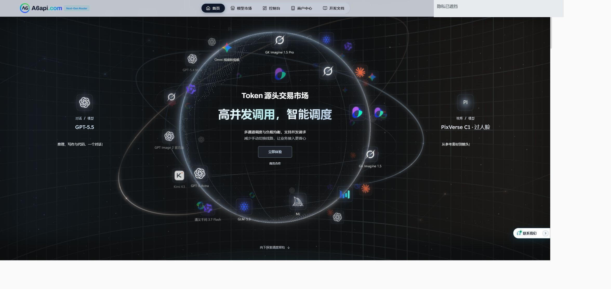
- 参考哪里
- 同一首页稍后时间帧，浮动标记位置与 R01 不同。
- 如何应用
- 与 R01 配对理解持续运动，不把任一帧当作完整动效规格。
- 不要误读
- 截图只能说明时间状态变化，不能据此断言轨道算法或鼠标视差机制。
A6API 下滚 · 架构展示
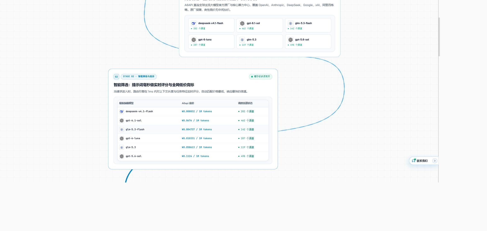
- 参考哪里
- 下滚后的功能架构区，可见连接线、分层节点和内容区块。
- 如何应用
- 仅借鉴层次与连接关系；本项目重点仍是可读教学作品。
- 不要误读
- 截图中的价格、模型名称、渠道数量和宣传承诺都不是本项目需求。
匠邦 AI · 入口组织
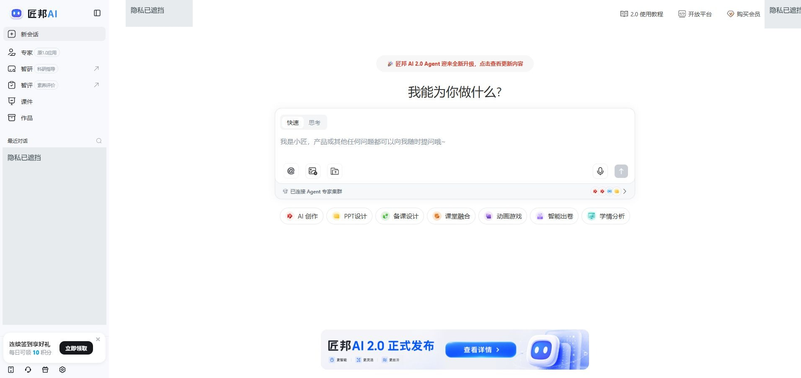
- 参考哪里
- 最终截图无遮挡：左侧任务导航，中央输入区，下方快捷能力入口。
- 如何应用
- 借鉴入口层级和从输入到具体任务的路径，不照搬页面。
- 不要误读
- 初始页面文字曾出现验证码；未处理验证码、未打开私人会话，最终像素中已无遮挡。内部旧文件名不代表最终状态。
图片工具 · 本次页面状态
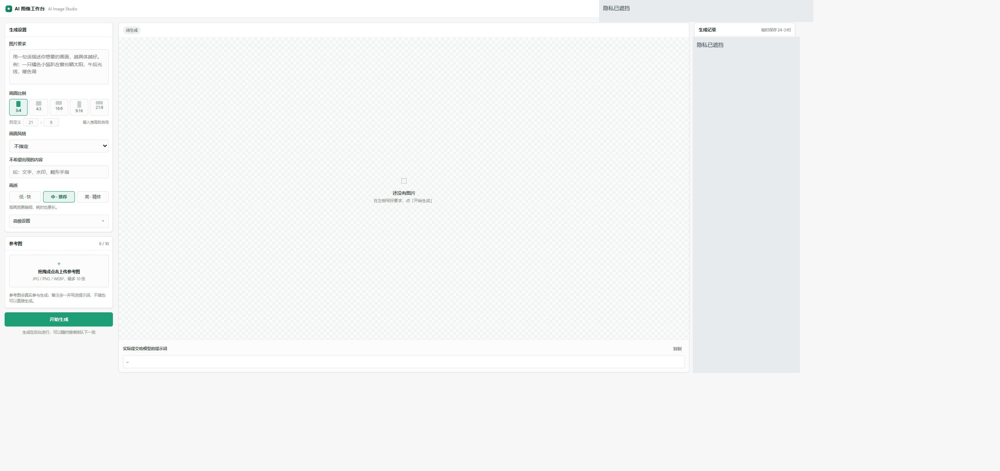
- 参考哪里
- 最终截图显示设置、预览、生成记录三栏；右上账户区域和记录内容已遮挡。
- 如何应用
- 保留三段工作流，重做参数层级、比例控件、参考图与预览占比。
- 不要误读
- 初始文字快照曾有卡密入口，但最终截图不是卡密弹窗。未输入、提取或提交卡密，未生成；不据此判断登录流程或服务可用性。
来源 https://dd66fcd127a04500b0c694c798ca3579.app.workbuddy.host/
图片工具 · 历史布局
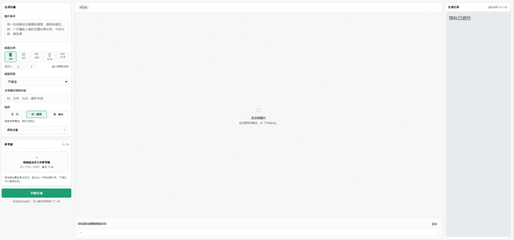
- 参考哪里
- 用户已有参考图：左侧生成设置与参考图，中央预览，右侧记录栏。
- 如何应用
- 对照 R05 理解较清晰的参数与空态布局。
- 不要误读
- 历史截图，原拍摄时间未知；2026-10-16 仅为本轮整理日期。不是本次成功解锁或生成的证据。
来源 https://dd66fcd127a04500b0c694c798ca3579.app.workbuddy.host/
VoxCPM · 历史主界面
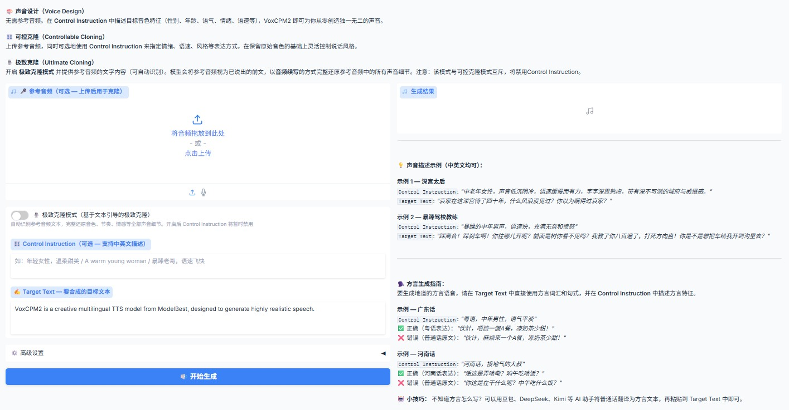
- 参考哪里
- 用户已有参考图包含三种模式说明、参考音频、控制指令、目标文本与结果区。
- 如何应用
- 重排模式选择、必要输入和结果区域，不复制品牌与示例文案。
- 不要误读
- 历史截图，原拍摄时间未知。本次读取了页面模式说明，但截图接口持续超时；不宣称本轮录音、上传或合成成功。
VoxCPM · 历史高级参数
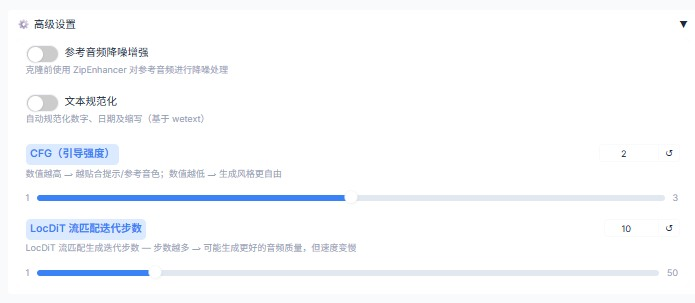
- 参考哪里
- 用户已有展开状态图：降噪、文本规范化、CFG 与 LocDiT 控件。
- 如何应用
- 保留参数关系与可输入数值，放入清晰的高级区。
- 不要误读
- 历史截图，原拍摄时间未知；本轮页面文字核对到 CFG 2 / 1–3、LocDiT 10 / 1–50，未验证合成质量。
Yunbay 粒子 · 时间状态 0
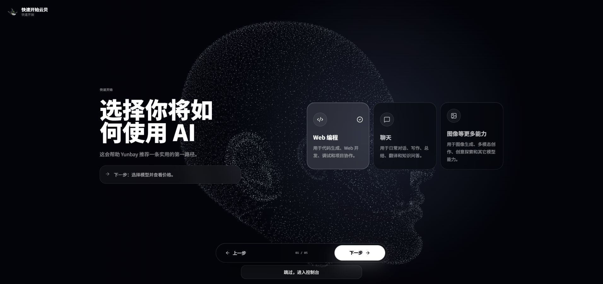
- 参考哪里
- 新手指引第一步，默认选中 Web 编程，背景粒子构成人形轮廓。
- 如何应用
- 可选的粒子构形、空间和运动氛围，不要求使用人物轮廓。
- 不要误读
- 用户原链接为 /usage-logs/common；本次只采集 /quick-start，没有采集私人使用日志。
Yunbay 粒子 · 时间状态 1
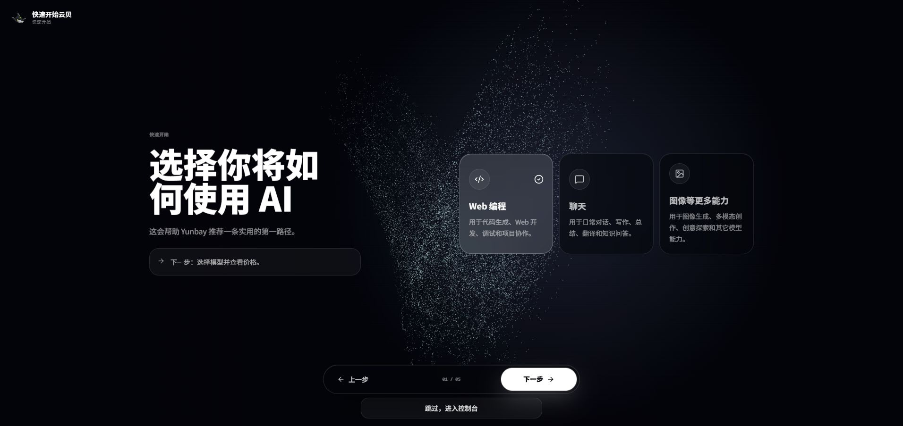
- 参考哪里
- 保持第一步和 Web 编程选中，稍后时间帧的粒子构形不同。
- 如何应用
- 与 R09 配对说明动态；作品入口不要随粒子运动而难以点击。
- 不要误读
- 没有测量帧率或验证鼠标驱动的粒子算法，不能把两张图当作性能验收。
Yunbay · 聊天选中
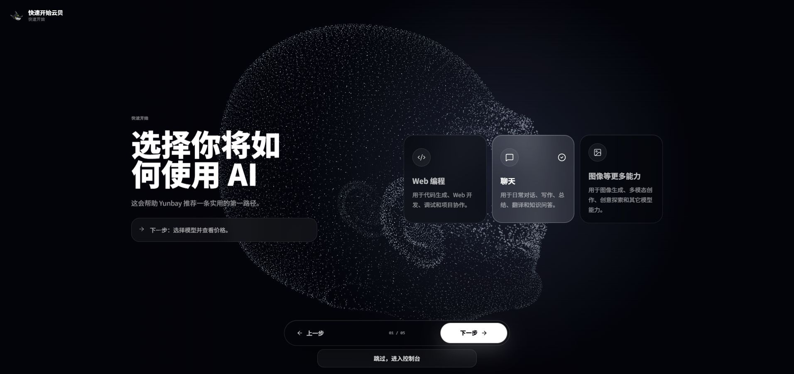
- 参考哪里
- 点击聊天后的稳定画面，聊天卡高亮且勾选；仍在第一步。首次截图有画面延迟，本图为稍后补采并按像素确认。
- 如何应用
- 选中态需清楚、稳定；可参考选择反馈，不移植它的整个引导流程。
- 不要误读
- 未进入下一步、控制台、账户、付款或密钥页面；没有验证选择与粒子变化的因果关系。
FlowCanva · 官方空画布图
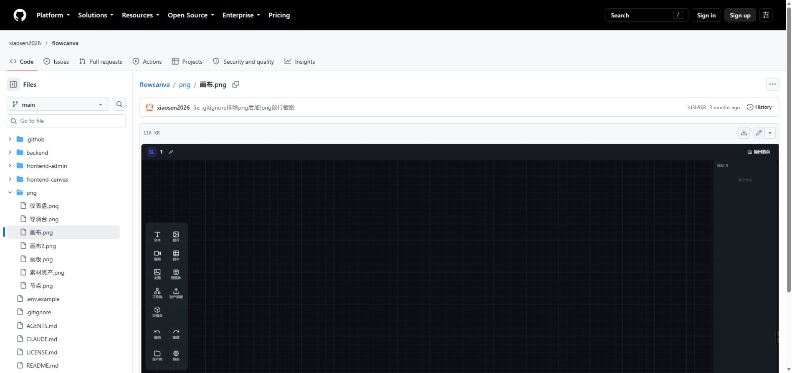
- 参考哪里
- GitHub 官方仓库内的空画布截图，含工具区、网格和缩放入口。
- 如何应用
- 借鉴可持续扩展的创作空间与工具组织。
- 不要误读
- 本轮截的是仓库已有图片，不是运行 FlowCanva；不要把截图当作已验证的连线/撤销行为。
来源 https://github.com/xiaosen2026/flowcanva/blob/main/png/%E7%94%BB%E5%B8%83.png

FlowCanva · 官方节点图
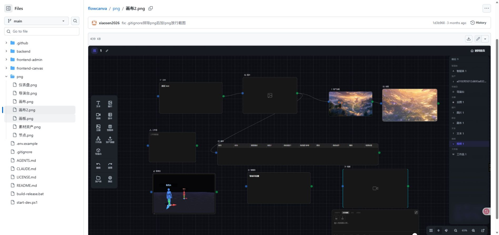
- 参考哪里
- GitHub 官方画布2.png：多种节点与连线共存，图中素材为仓库演示内容。
- 如何应用
- 参考从文本到素材再到结果的节点关系，本项目缩减为教师常用流程。
- 不要误读
- 截图保存时间来自本轮文件时间记录；不是实际操作、运行任务或接通接口的证据。
来源 https://github.com/xiaosen2026/flowcanva/blob/main/png/%E7%94%BB%E5%B8%832.png

Vue Flow · 官方指南
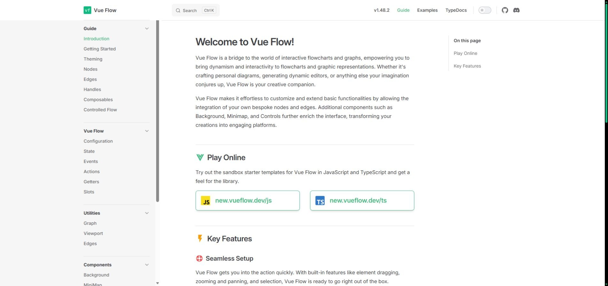
- 参考哪里
- 官方节点画布指南页面，作为技术选型资料。
- 如何应用
- 推荐 Vue Flow；画布独立构建，主站保持现有 Vue 与经典脚本。
- 不要误读
- 文档截图不代表本项目已接入；兼容性与离线构建尚待 Gemini 实现和后续人工验证。